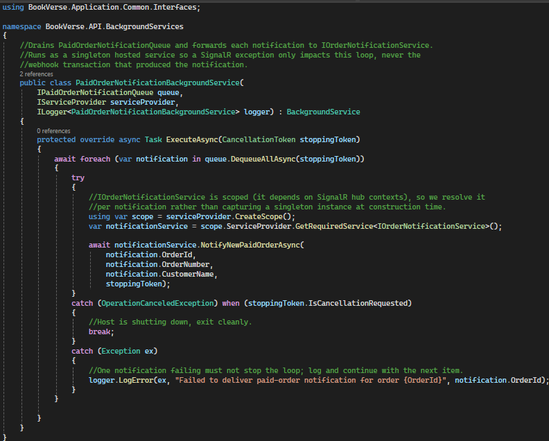
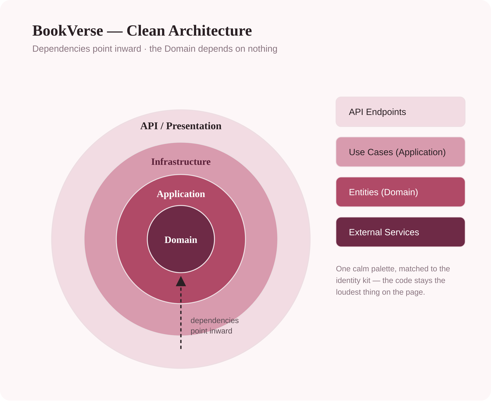

I turn messy requirements into clean, reliable backend code.
Third-year IT student and junior backend developer, working in C#, ASP.NET Core and SQL. Most interested in database design and systems that stay correct when something fails.
Selected work
BookVerse
A full e-commerce backend in C#, built with Clean Architecture. The part worth talking about is what happens after a customer pays.
- C#
- ASP.NET Core
- Clean Architecture
- SQL Server
- SignalR
The problem
Staff had to be notified when an order was paid. The obvious place to send that notification was inside the payment transaction — which meant a notification failure could roll back a payment that had already succeeded.
What I did
I moved the notification out of the transaction. The paid order goes into an outbox queue inside the payment transaction, and a background service drains that queue separately and pushes notifications over SignalR.
The result
A failed notification is logged and skipped. The payment stays committed, and one bad send never stops the rest. The two failures are now independent.


About
Suana Mešić
I'm a third-year student at the Faculty of Information Technologies in Mostar. I've been tutoring databases and applied statistics at the faculty since 2024, and since 2022 I've taught maths one-to-one, in person, to primary school pupils in my hometown. That's where I learned that if you can't explain something simply, you probably don't understand it yet.
What I like about backend work is that it's checkable. A payment either stays committed or it doesn't. I'm looking for a first role where I can keep learning from people who have been doing this longer than I have.
Contact
Let's talk
I'm open to junior backend roles and internships. The fastest way to see how I work is the code itself.
Start with my GitHub →